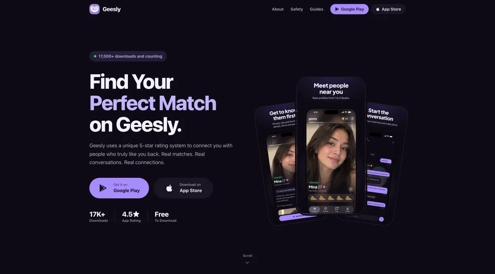
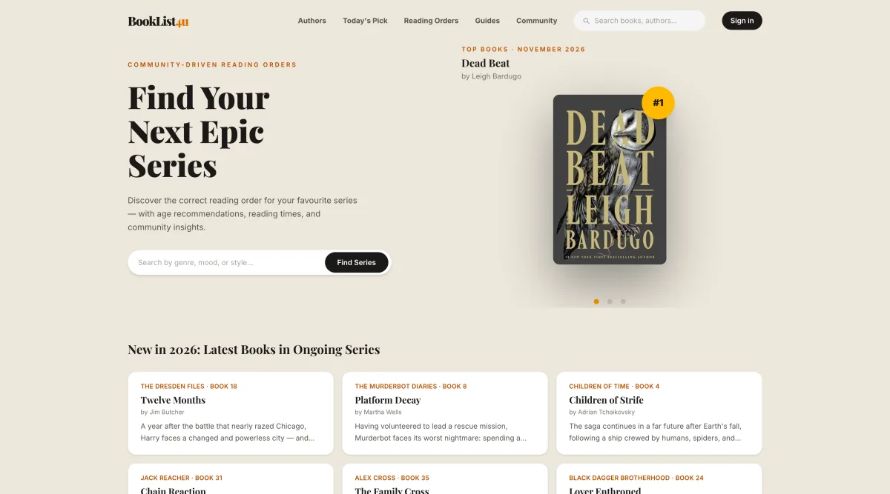
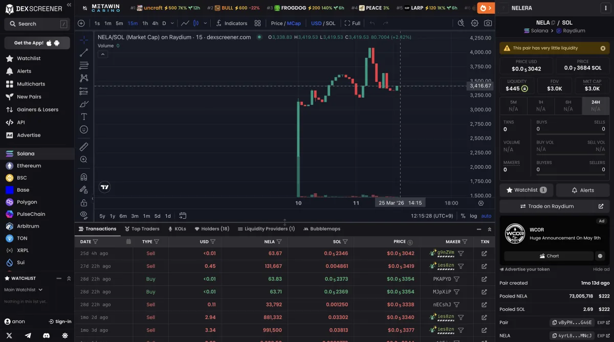
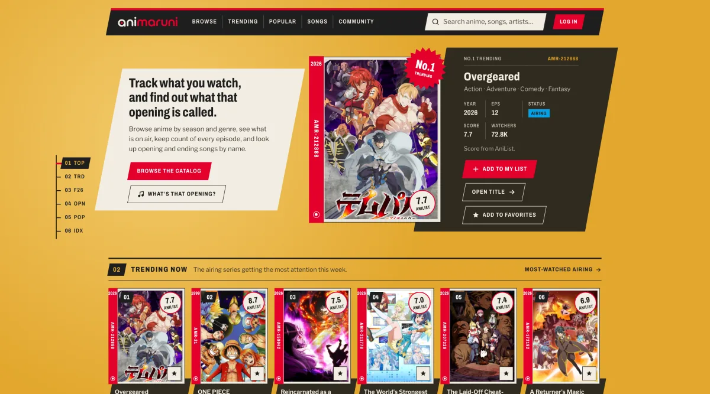
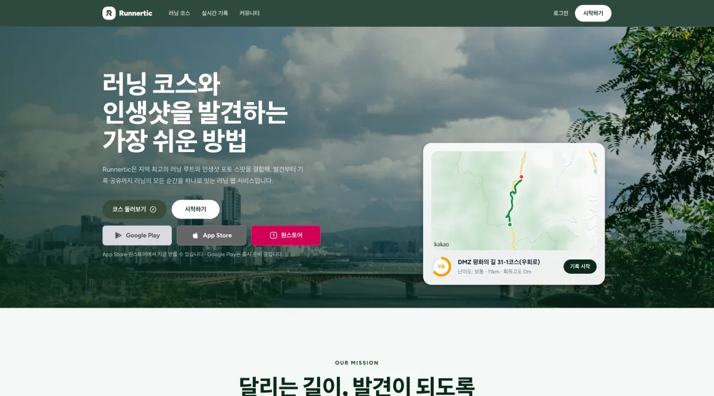
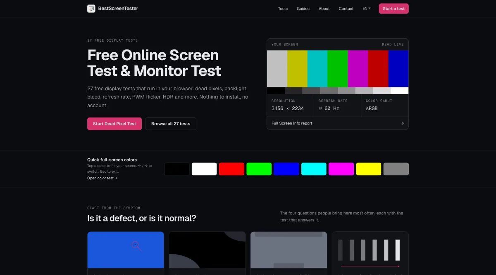
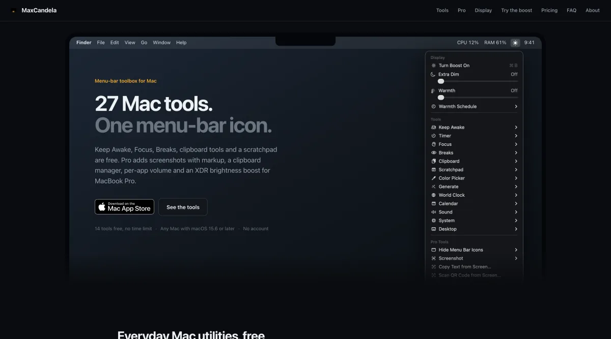
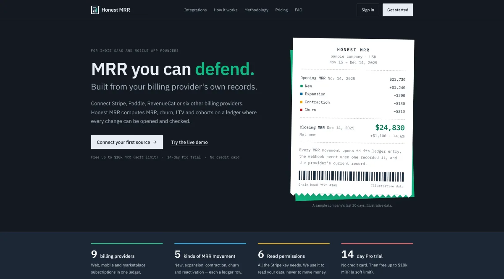

I design, build, ship, and run real products — end to end.
I'm a full-stack engineer who has shipped ten projects, including a Flutter dating app, a revenue-analytics SaaS, four Next.js sites, and a macOS utility. I write the code, run the servers, and handle the releases myself.
Hi, I'm Daniel.
I build products and I run the systems underneath them. Since September 2025 I've been the sole engineer behind the solo projects on this page — writing the code, and administering the Linux servers, Docker containers, Postgres databases, CI/CD pipelines, and DNS that keep them online.
I also served nearly two years of Korean national service as a security officer at the Supreme Court of Korea, trusted to staff an access-control post alone. I'm now looking for a full-time role in software engineering or in infrastructure: data center, network, or cloud support.
- Location
- Seattle, WA — relocating January 2027
- Open to
- Software engineering, and data center, network, or cloud support roles
- Education
- B.S. Software Engineering, Western Governors University — starting March 2027
- Languages
- English and Korean, both fluent
- Work authorization
- U.S. citizen, no sponsorship needed
Tech stack
Tools and services I've used to ship and operate the projects below.
Frontend
Mobile
Backend & data
Cloud & services
AI
Design & planning
Featured projects
Ten projects I've built and shipped — nine on my own and one with a team — including this site.
Geesly — Dating app
17,000+ downloads and a 4.5-star rating. A cross-platform dating app with real-time matching over Firestore, geospatial discovery, RevenueCat subscriptions, and Vision-API content moderation, localized in 9 languages. The hardest lesson has been distribution — shipping the app is only the first problem.

Created: September 2025
Created: February 2026BookList4U — Book series, in order
95 hand-curated book series, each in publication order and in-world chronological order. Readers add community reading times and can generate new series through Google Books; NYT bestseller data and Amazon affiliate links round it out. Self-hosted in Docker with its own Postgres, deployed by GitHub Actions.
NELA — Solana token
1 billion tokens minted on Solana with the mint and freeze authorities revoked, a Raydium pool seeded, and the LP tokens burned so the liquidity could never be pulled. Sniper bots bought about 70% of the supply in the second the pool opened, held it for two months, then sold it all at once and cut the price 98%. A roughly $500 lesson in how token launches actually get exploited.

Created: March 2026 Created: March 2026
Created: March 2026CanonTrails — The right order to play any game series
95 game series and more than 2,100 games mapped into canonical play order, with DLC placement, branching timelines, and HowLongToBeat estimates per game version. Games import from IGDB with auto-detected entry types, and buy links route through affiliate stores. Self-hosted in Docker with its own Postgres behind Cloudflare, deployed by GitHub Actions.
This portfolio
The site you're on right now. Written in clean HTML, CSS, and vanilla JavaScript with no frameworks or build tools. Dark theme, animated code showcase, glass-morphism cards, and a responsive layout that works from phone to ultrawide.
 Created: April 2026
Created: April 2026
Created: May 2026Animaruni — Track anime and find that opening song
Track, score, and favourite anime, get recommendations modelled on your own library, and look up any show's opening and ending theme songs. Catalog data comes from the AniList GraphQL API through a throttled layer, and theme songs from AnimeThemes. Self-hosted in Docker with its own Postgres; a deploy only runs after CI passes.
Runnertic — Running courses and photo spots
A Korean running service built with a small team: find running courses and photo spots on a map, record a run live, and share it with the community. My part covered the home page, community posts with reports and operator moderation, SEO, Sign in with Apple, a Cloud KMS envelope for the key that encrypts personal data fields, and the iOS App Store release. The web app runs on Next.js with Firestore behind it, alongside a native iOS app on the App Store and an Android release on ONE store.

Created: June 2026
Created: June 2026BestScreenTester — A full suite of browser screen tests
27 free screen tests in seven languages — dead pixels, backlight bleed, refresh rate, PWM flicker, HDR, and more — plus 40+ guides. Fully static and 100% client-side using the Fullscreen API, Wake Lock, and Canvas: no accounts, no backend.
MaxCandela — A menu-bar toolbox for Mac
27 Mac tools behind one menu-bar icon. Fourteen are free, including Keep Awake, focus sessions, break reminders, and clipboard tools; Pro adds screenshots with markup, on-device text capture, a clipboard manager, per-app volume, and an XDR brightness boost that takes MacBook Pro displays past the roughly 600 nits macOS allows everyday content. Native Swift and AppKit, sold on the Mac App Store at $0.99 a month or $9.99 once after a free trial.

Created: July 2026
Created: October 2026Honest MRR — Revenue metrics you can audit
Nine billing providers, including Stripe, Paddle, and RevenueCat, feed one ledger of MRR movements for MRR, churn, LTV, and cohort retention; ad spend, app-store reports, and traffic sit alongside it without ever counting as MRR. Every MRR movement opens to its ledger entry and the provider's own record, each billing record joins a per-tenant hash chain, and founders send investors monthly PDF statements or expiring share links. Self-hosted in Docker behind Postgres row-level security; unit, integration, and Playwright suites must pass before a deploy runs.
Let's build something together.
I'm open to full-time roles and interesting freelance work.